Henghui Ding
Dr.
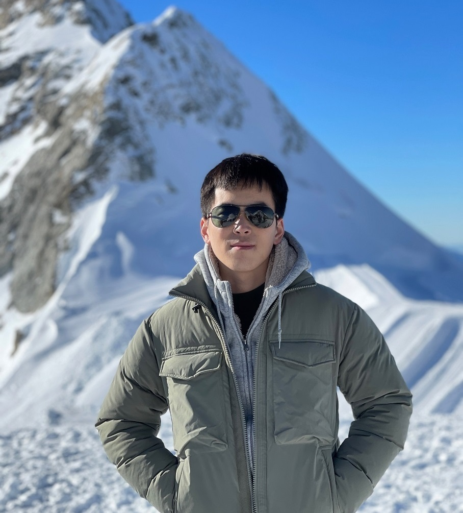
Tenure-track Professor
Fudan University
国家级高层次青年人才
henghui.ding[AT]gmail.com
hhding[AT]fudan.edu.cn


Biography
News
- [02, 2025] 3 papers accepted to
CVPR 2025 . - [02, 2025] Serving as an
Area Chair for NeurIPS 2025 . - [02, 2025] Serving as an
Area Chair for ACM MM 2025 . - [12, 2024] Serving as an Associate Editor for
IEEE TIP . - [12, 2024] Serving as an
Area Chair for ICML 2025 . - [12, 2024] 3 papers accepted to
AAAI 2025 . - [11, 2024] Serving as a Senior Program Committee (SPC) member for
IJCAI 2025 . - [09, 2024] 3 papers accepted to
NeurIPS 2024 . - [09, 2024] Serving as an
Area Chair for CVPR 2025 . - [08, 2024] Serving as an
Area Chair for ICLR 2025 . - [07, 2024] Transformer-based Segmentation Survey accepted to
IEEE TPAMI . - [07, 2024] 3 papers accepted to
ACM MM 2024 . - [07, 2024] 2 papers accepted to
ECCV 2024 . - [06, 2024] CVPR 2024 MOSE & MeViS Challenge Report.
- [06, 2024] Image Editing Survey.
- [06, 2024] Serving as a Senior Program Committee (SPC) member for
AAAI 2025 . - [05, 2024] Serving as an
Area Chair for BMVC 2024 . - [04, 2024] Serving as an
Area Chair for NeurIPS 2024 . - [04, 2024] 1 paper on Video Segmentation accepted to
IEEE TPAMI . - [03, 2024]
Call for Papers : CVPR 2024 PVUW Workshop. - [02, 2024] 3 papers accepted to
CVPR 2024 . - [02, 2024] Open Vocabulary Learning Survey accepted to
IEEE TPAMI . - [01, 2024] Serving as an
Area Chair for ACM MM 2024 . - [01, 2024] 2 papers accepted to
ICLR 2024 . - [12, 2023] 1 paper accepted to
AAAI 2024 . - [11, 2023] Serving as a Senior Program Committee (SPC) member for
IJCAI 2024 . - [11, 2023] 1 paper accepted to
IEEE TIP , 1 paper accepted toIEEE TMM . - [10, 2023] 1 paper accepted to
IEEE TPAMI . - [09, 2023] Several papers accepted, 1
NeurIPS , 1IEEE TIFS , 1PR . - [08, 2023] Serving as an
Area Chair for CVPR 2024 . - [08, 2023] MeViS Dataset is released. Evaluation server is online.
- [07, 2023] Serving as a Senior Program Committee (SPC) member for
AAAI 2024 . - [07, 2023] 5 papers accepted to
ICCV 2023 . - [07, 2023]
MOSE Dataset accepted to ICCV 2023. - [05, 2023] Named
CVPR 2023 Outstanding Reviewer . - [05, 2023] 2 papers accepted to
IEEE TIP . - [03, 2023] 6 papers accepted to
CVPR 2023 , 1 Highlight. - [02, 2023] MOSE Dataset is released. Evaluation server is online.
- [12, 2022] Serving as a Senior Program Committee (SPC) member for
IJCAI 2023 . - [11, 2022] Serving as an Associate Editor for
IET Computer Vision . - [10, 2022] 2 papers accepted to
IEEE TPAMI . - [09, 2022] 2 papers accepted to
NeurIPS 2022 . - [07, 2022] 2 papers accepted to
ECCV 2022 . - [03, 2022] 4 papers accepted to
CVPR 2022 . - [09, 2021] 2 papers accepted to
NeurIPS 2021 . - [09, 2021] Serving as a Senior Program Committee (SPC) member for
AAAI 2022 . - [07, 2021] 8 papers accepted to
ICCV 2021 .
Selected Publications [Google Scholar]
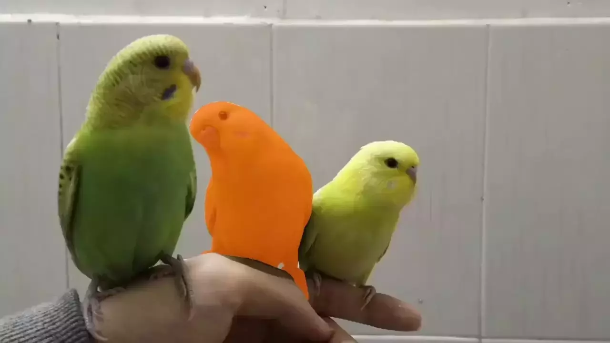 |
MeViS: A Large-scale Benchmark for Video Segmentation with Motion ExpressionsHenghui Ding, Chang Liu, Shuting He, Xudong Jiang, Chen Change Loy IEEE International Conference on Computer Vision (ICCV), 2023. |
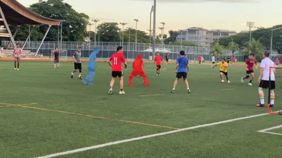 |
MOSE: A New Dataset for Video Object Segmentation in Complex ScenesHenghui Ding, Chang Liu, Shuting He, Xudong Jiang, Philip H.S. Torr, Song Bai IEEE International Conference on Computer Vision (ICCV), 2023. |
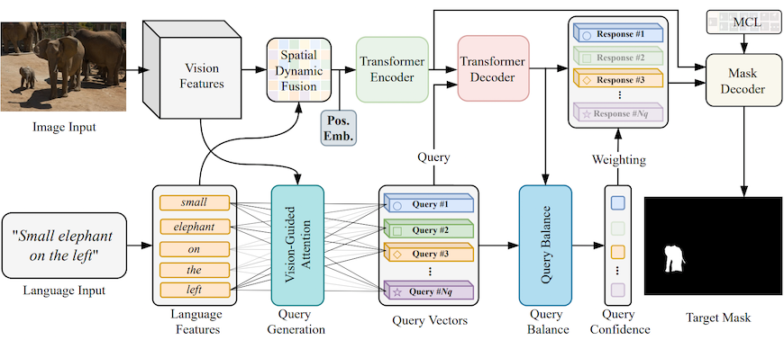 |
VLT: Vision-Language Transformer and Query Generation for Referring SegmentationHenghui Ding, Chang Liu, Suchen Wang, Xudong Jiang IEEE Transactions on Pattern Analysis and Machine Intelligence (TPAMI), 2023. |
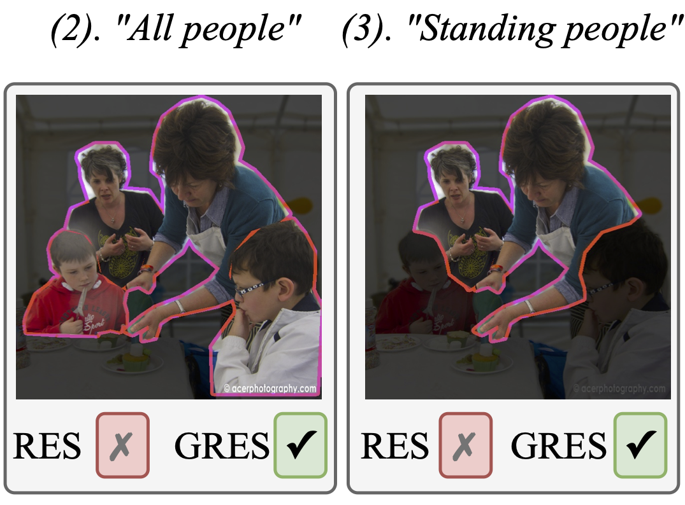 |
GRES: Generalized Referring Expression SegmentationChang Liu*, Henghui Ding* , Xudong Jiang IEEE Conference on Computer Vision and Pattern Recognition (CVPR), 2023. ( Corresponding Authorship, * Equal contribution) A new task and benchmark dataset of referring image segmentation: 🔥Project Page🔥 |
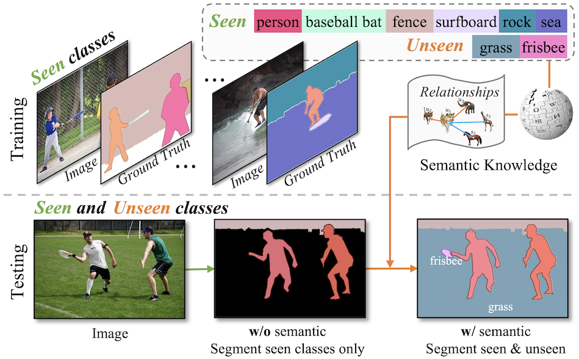 |
Primitive Generation and Semantic-related Alignment for Universal Zero-Shot SegmentationShuting He*, Henghui Ding* , Wei Jiang IEEE Conference on Computer Vision and Pattern Recognition (CVPR), 2023. ( Corresponding Authorship, * Equal contribution) The first unfied zero-shot segmentation framework: 🔥Project Page🔥 |
 |
Semantic-Promoted Debiasing and Background Disambiguation for Zero-Shot Instance SegmentationShuting He*, Henghui Ding* , Wei Jiang IEEE Conference on Computer Vision and Pattern Recognition (CVPR), 2023. ( Corresponding Authorship, * Equal contribution) |
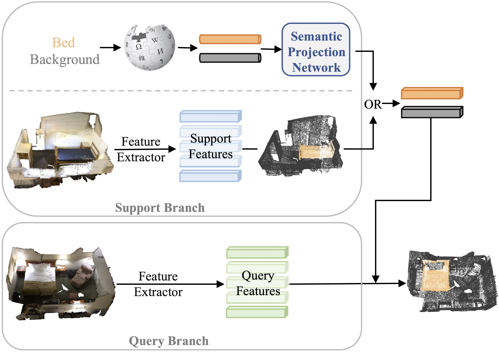 |
Prototype Adaption and Projection for Few- and Zero-shot 3D Point Cloud Semantic SegmentationShuting He, Xudong Jiang, Wei Jiang, Henghui Ding IEEE Transactions on Image Processing (TIP), 2023. ( Corresponding Authorship) |
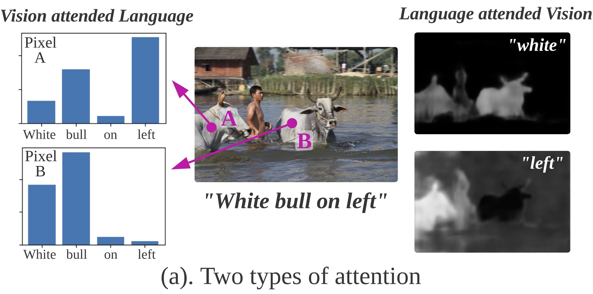 |
Multi-Modal Mutual Attention and Iterative Interaction for Referring Image SegmentationChang Liu, Henghui Ding, Yulun Zhang, Xudong Jiang IEEE Transactions on Image Processing (TIP), 2023. ( Corresponding Authorship) |
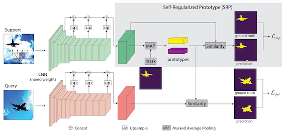 |
Self-Regularized Prototypical Network for Few-Shot Semantic SegmentationHenghui Ding, Hui Zhang, Xudong Jiang Pattern Recognition (PR), 2023. |
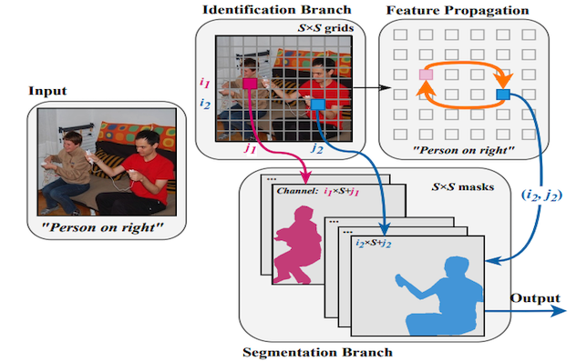 |
Instance-Specific Feature Propagation for Referring SegmentationChang Liu, Xudong Jiang, Henghui Ding IEEE Transactions on Multimedia (TMM), 2022. ( Corresponding Authorship) |
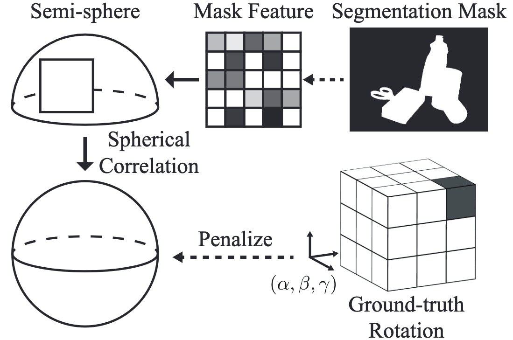 |
Spatial Feature Mapping for 6DoF Object Pose EstimationJianhan Mei, Xudong Jiang, Henghui Ding Pattern Recognition (PR), 2022. ( Corresponding Authorship) |
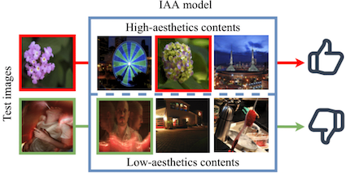 |
Distilling Knowledge from Object Classification to Aesthetics AssessmentJingwen Hou*, Henghui Ding*, Weisi Lin, Weide Liu, Yuming Fang IEEE Transactions on Circuits and Systems for Video Technology (TCSVT), 2022. (* Equal contribution) |
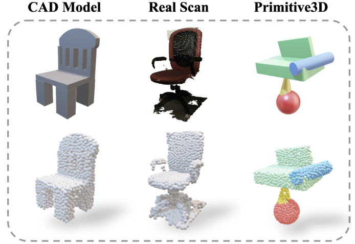 |
Primitive3D: 3D Object Dataset Synthesis from Randomly Assembled PrimitivesXinke Li*, Henghui Ding*, Zekun Tong, Yuwei Wu, Yeow Meng Chee IEEE Conference on Computer Vision and Pattern Recognition (CVPR), 2022. (* Equal contribution) |
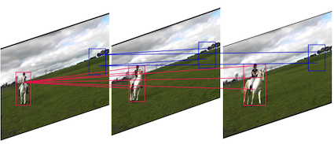 |
Coarse-to-Fine Feature Mining for Video Semantic SegmentationGuolei Sun, Yun Liu, Henghui Ding, Thomas Probst, Luc Van Gool IEEE Conference on Computer Vision and Pattern Recognition (CVPR), 2022. |
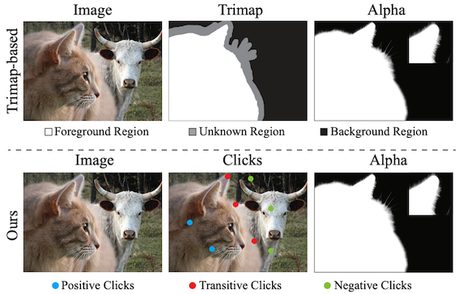 |
Deep Interactive Image Matting with Feature PropagationHenghui Ding, Hui Zhang, Chang Liu, Xudong Jiang IEEE Transactions on Image Processing (TIP), 2022. |
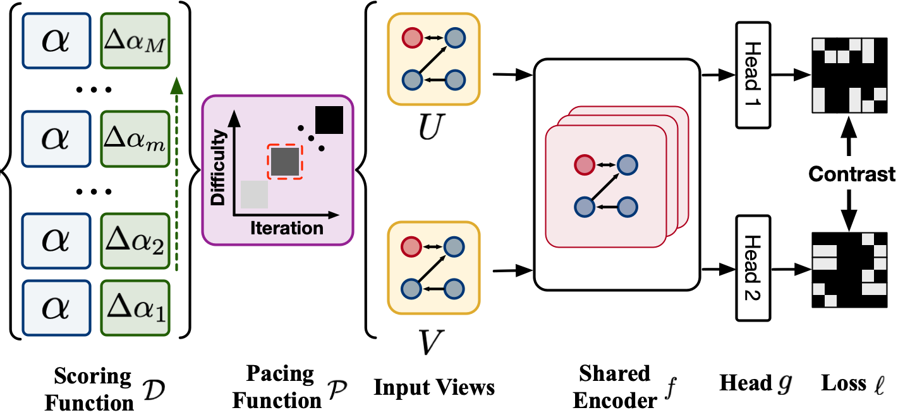 |
Directed Graph Contrastive LearningZekun Tong, Yuxuan Liang, Henghui Ding, Yongxing Dai, Xinke Li, Changhu Wang Advances in Neural Information Processing Systems (NeurIPS), 2021. ( Corresponding Authorship) |
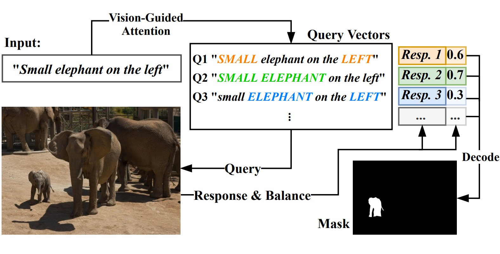 |
Vision-Language Transformer and Query Generation for Referring SegmentationHenghui Ding, Chang Liu, Suchen Wang, Xudong Jiang IEEE International Conference on Computer Vision (ICCV), 2021. |
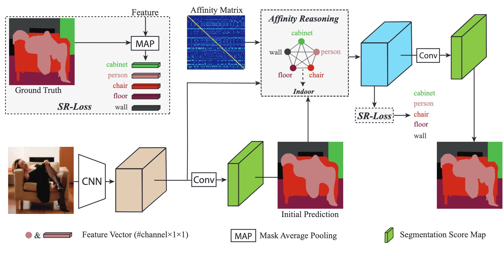 |
Interaction via Bi-directional Graph of Semantic Region Affinity for Scene ParsingHenghui Ding, Hui Zhang, Jun Liu, Jiaxin Li, Zijian Feng, Xudong Jiang IEEE International Conference on Computer Vision (ICCV), 2021. |
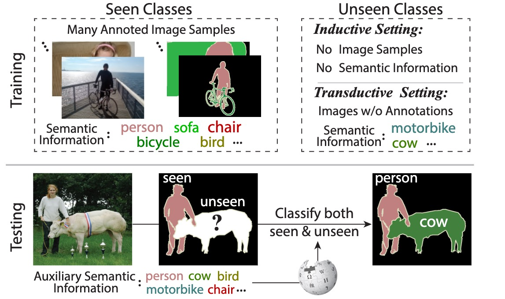 |
Prototypical Matching and Open Set Rejection for Zero-Shot Semantic SegmentationHui Zhang, Henghui Ding IEEE International Conference on Computer Vision (ICCV), 2021. ( Corresponding Authorship) |
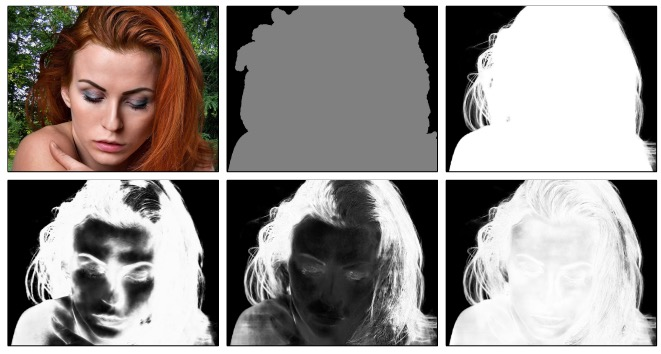 |
Towards Enhancing Fine-grained Details for Image MattingChang Liu, Henghui Ding, Xudong Jiang IEEE Winter Conference on Applications of Computer Vision (WACV), 2021. ( Corresponding Authorship) |
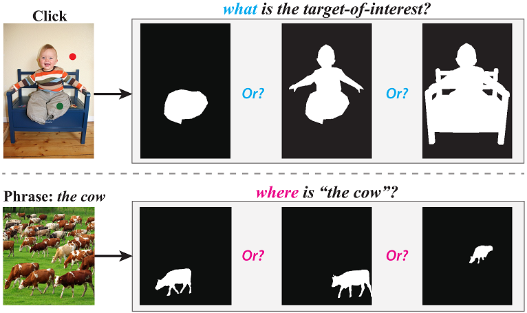 |
PhraseClick: Toward Achieving Flexible Interactive Segmentation by Phrase and ClickHenghui Ding, Scott Cohen, Brian Price, Xudong Jiang European Conference on Computer Vision (ECCV), 2020. Work done when intern at Adobe Research |
 |
Semantic Segmentation with Context Encoding and Multi-Path DecodingHenghui Ding, Xudong Jiang, Bing Shuai, Ai Qun Liu, Gang Wang IEEE Transactions on Image Processing (TIP), 2020. |
 |
Feature Boosting Network For 3D Pose EstimationJun Liu, Henghui Ding, Amir Shahroudy, Ling-Yu Duan, Xudong Jiang, Gang Wang, Alex C. Kot IEEE Transactions on Pattern Analysis and Machine Intelligence (TPAMI), 2020. |
 |
Toward Achieving Robust High-level and Low-level Scene ParsingHenghui Ding*, Bing Shuai*, Ting Liu, Gang Wang, Xudong Jiang IEEE Transactions on Image Processing (TIP), 2019. (* Equal contribution) |
 |
Boundary-Aware Feature Propagation for Scene SegmentationHenghui Ding, Xudong Jiang, Ai Qun Liu, Nadia Magnenat Thalmann, Gang Wang IEEE International Conference on Computer Vision (ICCV), 2019. |
 |
Semantic Correlation Promoted Shape-Variant Context for SegmentationHenghui Ding, Xudong Jiang, Bing Shuai, Ai Qun Liu, Gang Wang IEEE Conference on Computer Vision and Pattern Recognition (CVPR), 2019. |
 |
Context Contrasted Feature and Gated Multi-Scale Aggregation for Scene SegmentationHenghui Ding, Xudong Jiang, Bing Shuai, Ai Qun Liu, Gang Wang IEEE Conference on Computer Vision and Pattern Recognition (CVPR), 2018. |
Activities
- Area Chair, CVPR'(24-25), NeurIPS'(24-25), ICLR'25, ICML'25, ACM MM'(24-25), BMVC'24.
- Associate Editor, IEEE Transactions on Image Processing (TIP), 2024-Present.
- Associate Editor, IET Computer Vision, 2022-Present.
- Associate Editor, Visual Intelligence, 2024-Present.
- Guest Editor, Electronics, 2023-2024.
- Senior Program Committee (SPC): AAAI'(22-25), IJCAI'(23-25).
- Conference Reviewer: CVPR, ICCV, ECCV, NeurIPS, ICML, ICLR, AAAI, WACV, BMVC, ICRA, ICIP, etc.
- Journal Reviewer: TPAMI, IJCV, TIP, TMI, TNNLS, TMM, TCSVT, PR, Neurocomputing, SPL, etc.
- Internship: Adobe Research, San José, USA.
Patents
- US Patent App. 16/839,209, 2021, Integrated Interactive Image Segmentation.
Teaching
- Semester 2, 2018-2019, E2010L/IM2004: Signals&Systems, NTU
- Semester 2, 2018-2019, E2004: Digital Electronics, NTU
- Semester 1, 2018-2019, EE4717: Web Application Design, NTU